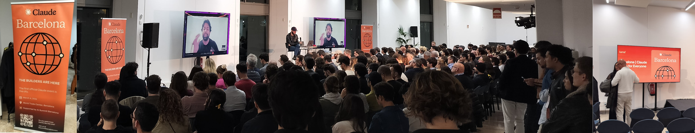

Anthropic is sponsoring Claude events around the globe. Yesterday the Claude Community in Barcelona hosted the first officially Anthropic-supported event: “Claude Code for Everyone”. I’m not going to rehash my general opinions on “AI”, LLM-assisted coding and vibe coding, but the event was what you’d expect from it: some curious applications, nothing revolutionary, and some bedazzlement at an Anthropic egineer “beaming in” through what you’d think was an AI-generated hologram, but was actually a Zoom call – bubble or no bubble, the hype machine rages on undeterred.
That said, the back-and-forth with the Claude Code engineer in question, Thariq Shihipar was overall saner than your average Anthopic statement. Mmost questions were pretty average – some interesting nonetheless, like safety concerns, and beyond the mainstream hype – but some of his points actually resonated with me, and actually toned down some of the hype:
One question was along the lines of how amazing it is that you can prompt Claude Code before you go to bed (yeah, I won’t get into work/life balance, screens and sleep, andall the reasons for this being problematic), and Thariq’s response was: “well, I actually like to think about things before I do them”, in almost as many words. Coming frfom a Claude Coded engineer (and at a time when Dario Amodei will repeat every 6 months that we’re 6 months away from fully automating software engineers) that’s quite significant. It’s also obvious for anyone paying any attention to anything; LLMs will never automated judgement: there are infinite possibilities, and we have to decide what we want – that’s what’s most important in anything we do.
A second comment by Thariq, more than a reply, was about LLMs being “grown”, not designed, so nobody (Anthropic included) knows what they are good at. That’s a bad choice of words, but I get what he means, the architecture is designed and then model parameters (“weights”) are estimated (“trained”), and after the fact they need to figure out if it’s actually able to perform as expected, and how much better it is than thte previous version. As a corollary, they cannot know what it’s bad at either. There are obvious problems in spending millions on dollars building something that you don’t know that it can and cannot do, and we’ll see if there’s really business model for this kind of statistical gambling.
Question: what is the future and evolution of Claude Code Skills. Answer: “skills are pretty general, so there isn’t really an evolution to it”. I had never thought much about it, but skills are just markdown files with some plain-languages instructions (i.e. prompt fragments) and code; so, basically, LLMs were supposed to be a higher level than coding, which would handle the actual thing, but then we need “skills”, which are actually a user-specified layer above the LLM. Were coding for the LLM to code; in a way it kind of defeats most of the purpose of an LLM.
Anyway, no huge conclusion or prediction for the future of the LLM business, of Anthropic, of Claude Code, of coding in general; just another data point, and it’s kind of refreshing that (some of) the inside looks better than the outside (except for the politics, not going there this time either).
-- caetano,
March 5, 2026